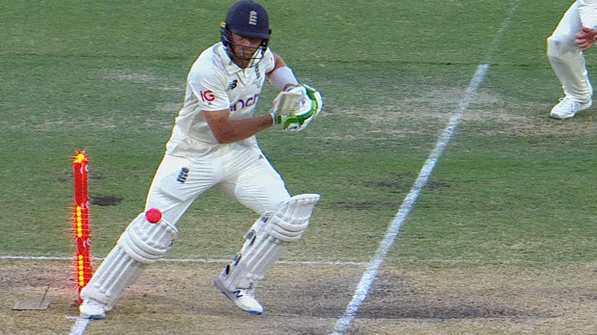
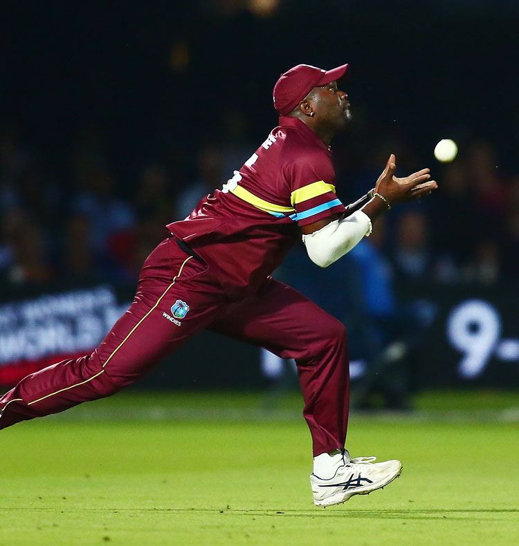
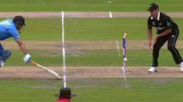
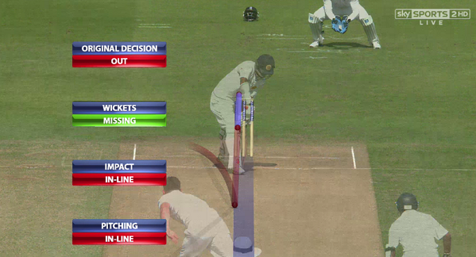
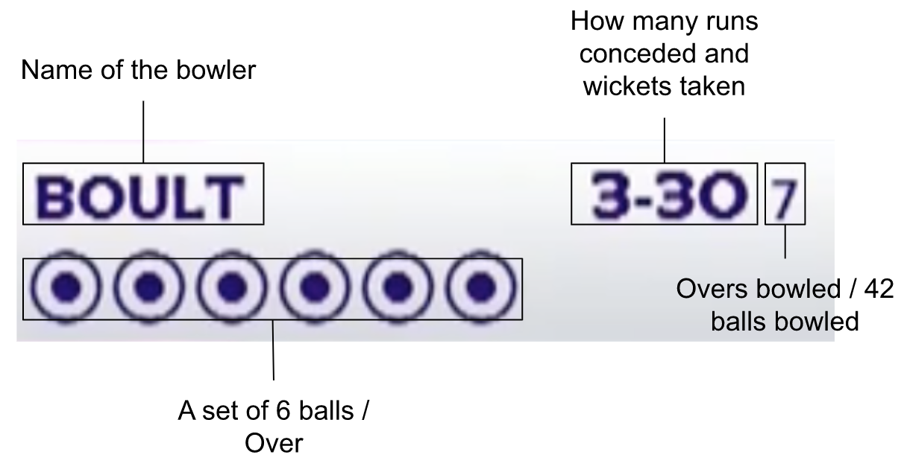

On the pitch two batsmen are batting and one is bowling. The bowler's aim is to get the batsmen out in one of six different ways :
Bowled : When the bowler bowls and the batsmen misses the ball which results in hitting the stumps or bail.
Hit Wicket : If the batsman indirectly hits the stumps or if any gear of the batsman fails down and hits stumps is also out.
Caught : The batsman hits the bowl in the air and a fielder catches it, without making any contact with the ground.
Run Out : If both attempt to run but one of the fielding team members hits the stumps before the batsman reaches the crease.
Stumped : If the batsman is out of their crease and does not connect the bowl with the batsmen the wicket keeper can hit the stumps.

LBW : If the batter's leg or body intercepts the ball before it hits the stumps, the batsman is out.
An "over" in cricket is a basic unit of play that consists of six deliveries. A designated bowler attempts to remove the batsman or limit his or her prospects for a run by sending the cricket ball down the pitch towards them during an over. Throughout the innings, bowlers alternate throughout the opposite end of the pitch once six deliveries are finished.
An over can go above 6 bowls if they bowl more wide or a no ball.
A bowler's illegal delivery is called a "no ball". It can occur for a number of reasons, including bowling illegally, stepping over the crease, or hitting the ball higher than waist height. The batting team is given an extra run when a no ball is declared, and the batsman cannot be removed by that delivery other than by run-out. The next delivery is also regarded as a "free hit," which means the batsman cannot be removed other than via a run-out.